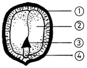
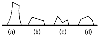
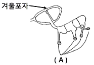
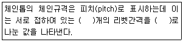

산림기능사 (2005-10-02 기출문제)
1과목: 조림 및 육림기술
1. 종자 채취 시 모수의 특성으로 적합하지 않는 것은?
- 성장이 빠를 것
- 재질이 우량할 것
- 가지가 많을 것
- 결실량이 많을 것
(정답률: 86%)

2. 천연하종 갱신이 가장 안전한 작업법으로 갱신기간을 짧게 하면 동령림이 조성되고, 길게 하면 이령림이 성립되는 방법으로 가장 적당한 것은?
- 중림작업
- 왜림작업
- 개벌작업
- 산벌작업
(정답률: 65%)
3. 묘목을 식재지까지 운반하기 위하여 알맞은 크기로 포장을 한다. 이것을 곤포(packing)라고 하는데 낙엽송 2년생 묘목을 포장할 때 속당 본수와 곤포당 속수로 가장 적당한 것은?
- 속당 본수 10본, 곤포당 속수 25속
- 속당 본수 20본, 곤포당 속수 25속
- 속당 본수 20본, 곤포당 속수 50속
- 속당 본수 50본, 곤포당 속수 50속
(정답률: 64%)
4. 제벌작업에 관한 설명 중 틀린 것은?
- 토양의 수분관리, 임(林)내의 미세환경 등을 고려하여 하층 식생은 보존한다.
- 제벌작업은 간벌작업 실시 후 실시하는 작업단계로서 보육작업에서 가장 중요한 단계이다.
- 제벌작업에 필요한 작업도구로는 낫, 톱, 도끼 등이다.
- 제거 대상목으로는 폭목, 형질불량목, 밀생목 등이 다.
(정답률: 75%)
5. C종간벌(강도간벌)실시 후에 남겨지는 수관급은?
- 1급목만 남아있다.
- 1급목과 2급목만 남아있다.
- 1급목과 3급목 일부가 남아있다.
- 1급목 일부와 2급목, 3급목이 남아있다.
(정답률: 58%)
6. 다음 중 풀베기를 할 수 있는 가장 적당한 시기는?
- 3~5월
- 6~8월
- 9~11월
- 12~2월
(정답률: 91%)
7. 솎아베기가 잘된 임지(林地), 유령림단계에서 집약 적으로 관리된 임분에서 생략이 가능한 산벌작업방식 은?
- 예비벌
- 하종벌
- 후벌
- 종벌
(정답률: 79%)
8. 묘포장으로 갖추어야 할 입지조건에 관한 설명 중 틀린 것은?
- 관배수가 용이한 곳
- 교통이 편리하고 노동력이 집중되는 곳
- 일반적으로 경사가 5° 미만으로 서향인 곳
- 조림지에 가까운 곳
(정답률: 88%)
9. 다음 중 종자가 발아하기 위하여 갖추어야 할 기본 요건이 아닌 것은?
- 효소
- 온도
- 수분
- 공기
(정답률: 93%)
10. 다음 일반적인 산림무육 목적의 설명 중 가장 거리가 먼 것은?
- 임상의 정리
- 임목의 생장촉진
- 나무의 형질향상
- 병해충방지
(정답률: 59%)
11. 수목 종자 중 단백질, 지방이 주성분인 종자의 탈각은 어떻게 처리하는 것이 가장 적당한가?
- 양달건조하여 탈각한다.
- 응달건조하여 탈각한다.
- 부숙법으로 탈각한다.
- 유궤법으로 탈각한다.
(정답률: 59%)
12. 다음 중 종자의 실중을 가장 잘 설명한 것은?
- 종자의 협잡물 제거량
- 충실종자와 미숙종자와의 비율
- 미세립 종자 1,000립의 4회 평균 중량
- 종자 1L의 중량
(정답률: 80%)
13. 왜림작업의 경영을 설명한 것 중 가장 적당하지 않은 것은?
- 땔감이나 소형재를 생산하기에 알맞다.
- 벌기가 짧아 적은 자본으로 경영할 수 있다.
- 벌채점을 지상 1.5m 정도 되도록 높게 하는 것이 좋다.
- 벌채시기는 근부에 많은 양분이 저장된 늦가을부터 초봄사이에 실시한다.
(정답률: 78%)
14. 다음 중 곤포당 수종의 본수가 가장 적은 것은?
- 삼나무(묘령1년)
- 편백(묘령2년)
- 물푸레나무(묘령1년)
- 전나무(묘령4년)
(정답률: 62%)
15. 양묘시 일반적으로 1년생을 이식하지 않는 수종 은?
- 잣나무
- 삼나무
- 편백
- 리기테다소나무
(정답률: 43%)
16. 다음 중 동령림의 장점으로 가장 적당한 것은?
- 지력보호상 유리하다.
- 갱신이 짧은 시간 내에 이루어진다.
- 풍해가 매우 적다.
- 동령림 내 작은 나무들이 장차 유용 임목으로 된다.
(정답률: 64%)
17. 묘목을 1.8mx1.8m 정방향으로 식재할 때 1ha 당 묘목의 본수로 가장 적당한 것은?
- 약 2,500본
- 약 3,086본
- 약 3,500본
- 약 5,000본
(정답률: 84%)
18. 파종조림의 성과에 관계되는 요인으로 가장 거리가 먼 것은?
- 수분
- 흙 옷
- 동물의 해
- 식물의 해
(정답률: 71%)
19. 파종상에서 그대로 2년을 지낸 실생 묘목의 연령 표시법이 옳은 것은?
- 1 - 1묘
- 2 - 0묘
- 0 - 2묘
- 2 - 1 - 1묘
(정답률: 91%)
20. 다음 수종 중 분류학상 침엽수에 속하는 것은?
- 가시나무
- 은행나무
- 밤나무
- 참나무
(정답률: 79%)
21. 다음 중 영양번식묘가 아닌 묘목은?
- 삽목묘
- 취목묘
- 접목묘
- 실생묘
(정답률: 85%)
22. 토양을 형성하는 암석 중 화성암에 속하지 않는 것은?
- 화강암
- 편마암
- 석영반암
- 현무암
(정답률: 62%)
23. 교림작업과 왜림작업을 혼합한 갱신작업으로 동일 임지에서 건축재(일반용재)와 신탄재를 동시에 생산하는 것을 목적으로 하는 작업종은?
- 개벌작업
- 산벌작업
- 중림작업
- 왜림작업
(정답률: 86%)
24. 다음 도면은 참나무류 종자의 내부구조도이다. 어린뿌리는 어느 부분인가?

- ①
- ②
- ③
- ④
(정답률: 92%)
25. 맹아를 위한 줄기베기의 그림이다. 가장 적합한 것은?

- (a)
- (b)
- (c)
- (d)
(정답률: 85%)
2과목: 산림보호
26. 다음 중 담자균류에 의한 주요 수병으로 어려운 것은?
- 잣나무잎녹병
- 젓나무빗자루병
- 낙엽송가지끝마름병
- 밤나무녹병
(정답률: 48%)
27. 산불이 발생하는 조건의 설명으로 틀린 것은?
- 침엽수는 활엽수보다 산불이 일어나기 쉽다.
- 양수는 음수에 비해 산불이 일어나기 쉽다.
- 나이가 많은 큰나무가 될수록 산불이 일어나기 쉽다.
- 단순림과 동령림이 혼효림 또는 이령림보다 산불이 일어나기 쉽다.
(정답률: 80%)
28. 연해에 대한 임목의 피해정도를 표시한 것 중 옳지 않은 것은?
- 석회가 충분한 임지＞석회가 부족한 임지
- 교림＞왜림
- 비옥지＞척박지
- 여름철 낮에＞겨울철 밤에
(정답률: 62%)
29. 다음 중 수목 뿌리혹병의 병원체와 전염방법을 가장 바르게 설명한 것은?
- 병원체는 마이코플라스마이며, 마름무늬매미충이 전염시킨다.
- 병원체는 바이러스이며, 병든 나무에서 종자를 채취하여 번식할 때 전염된다.
- 병원체는 세균이며, 접목 시 감염이 잘되며, 상처를 통하여 침입이 된다.
- 병원체가 진균류이며, 중간기주로 송이풀로 기주 전환을 한다.
(정답률: 73%)
30. 다음 중 마이코플라스마(mycoplasma)에 의한 수병은?
- 아카시아모자이크병
- 오동나무빗자루병
- 뿌리혹병(근두암종병)
- 소나무잎떨림병
(정답률: 84%)
31. 다음 중 포플러와 낙엽송을 섞어서 심지 않는 이유는?
- 낙엽송의 생육이 현저하게 나빠지기 때문이다.
- 두 수종이 미량요소의 요구가 많기 때문이다.
- 포플러잎녹병의 중간기주가 낙엽송이기 때문이다.
- 낙엽송 끝마름병의 중간기주가 포플러이기 때문이다.
(정답률: 83%)
32. 향나무녹병균의 겨울포자가 발아한 그림이다. A는 무엇인가?

- 녹포자
- 자낭포자
- 담자포자(소생자)
- 여름포자
(정답률: 68%)
33. 소나무와 해송의 새잎에 벌레혹(충영)을 만들어 피해를 주는 해충은?
- 소나무좀
- 솔잎혹파리
- 솔나방
- 소나무재선충
(정답률: 81%)
34. 다음의 해충 중 일반적으로 묘포에서 뿌리를 가해하는 것은?
- 솜벌레과
- 굴파리과
- 비단벌레과
- 풍뎅이과
(정답률: 92%)
35. 다음 중 담배장님노린재에 의하여 매개 전염되는 수병은?
- 포플러모자이크병
- 오동나무빗자루병
- 잣나무털녹병
- 소나무잎녹병
(정답률: 79%)
36. ( )는 병원균의 포자가 기주인 식물에 부착하여 발아하는 것을 저지하거나 식물이 병원균에 대하여 저항성을 가지게 하는 약제를 말한다. ( )에 적당한 것은?
- 직접살균제
- 보호살균제
- 세포막 형성저해제
- 단백질 형성저해제
(정답률: 85%)
37. 다음 중 염풍 또는 조풍에 저항성이 가장 강한 수종은?
- 곰솔
- 벚나무
- 삼나무
- 편백
(정답률: 86%)
38. 다음 중 어린묘목이 토양수분의 변화로 뽑히게 되는 것을 가리키는 것은?
- 열공
- 피소
- 상주
- 상렬
(정답률: 56%)
39. 다음 중에서 지표에 쌓여 있는 낙엽. 낙지. 지피 물. 지상관목. 치수 등이 불에 타는 화재는?
- 지중화
- 수간화
- 수관화
- 지표화
(정답률: 87%)
40. 살충제의 종류와 설명이 바르게 연결되지 않은 것은?
- 소화중독제 : 해충의 입을 통하여 소화관 내에 들어가 중독 작용을 일으킨다.
- 접촉제 : 해충의 체표면에 직ㆍ간접적으로 닿아 약제가 기문의 피부를 통하여 몸속으로 들어가 신경계통, 세포조직에 독작용을 일으킨다.
- 훈증제 : 약제가 기체로 되어 해충의 기문을 통하여 체내에 들어가 질식을 일으킨다.
- 침투성살충제 : 약제가 해충의 피부를 통하여 직접 적으로 침투하여 체내에서 독작용을 일으킨다.
(정답률: 52%)
3과목: 임업기계일반
41. 다음 중 4행정기관에서 1 사이클을 완료하기 위하여 크랭크축은 몇도 회전해야 하는가?
- 720°
- 360°
- 120°
- 180°
(정답률: 78%)
42. 체인톱과 예불기 등 2행정 기관의 연료로 적합한 것은?
- 가솔린과 경유
- 가솔린과 오일 혼합유
- 경유와 오일
- 가솔린과 석유 혼합유
(정답률: 83%)
43. 다음 중 체인톱 LA나사의 주요 기능으로 가장 적당한 것은?
- 악셀레바의 보조역할을 한다.
- 공전 조정 나사이다.
- 고속 조정 나사이다.
- 체인회전력 조정 나사이다.
(정답률: 50%)
44. 엔진의 출력을 마력(HP, PS)대신에 kW단위를 사용 하고 있다.1마력은 약 몇 kW와 같은가?
- 약 0.7kW
- 약 1.0kW
- 약 1.4kW
- 약 2.0kW
(정답률: 84%)
45. 다음 중 작업도구와 능률에 관한 기술로 가장 거리가 먼 것은?
- 자루의 길이는 적당히 길수록 힘이 강해진다.
- 도구의 날 끝각도가 클수록 나무가 잘 빠개진다.
- 도구는 가벼울수록, 내려치는 속도가 늦을수록 힘이 세어진다.
- 도구의 날은 날카로운 것이 땅을 잘 파거나 자를 수 있다.
(정답률: 83%)
46. 체인을 갈 때 가장 적합한 방법은 ?
- 줄질을 적게 자주한다.
- 줄질을 한 번에 많이 한다.
- 줄질은 작업 완료 후 실내에서 한다.
- 체인은 수리공장에서 간다.
(정답률: 76%)
47. 다음 중 산림작업 시 개인 안전 장비가 아닌 것은?
- 안전헬멧
- 안전화
- 구급낭
- 얼굴보호망
(정답률: 91%)
48. 체인톱으로 가지치기를 할 때 지켜야 할 유의사항이 아닌 것은?
- 안내판이 길고 무거운 대형 기계톱을 사용한다.
- 전진하면서 작업한다.
- 벌목한 나무를 몸과 체인톱 사이에 놓고 작업한다.
- 작업자는 벌목한 나무에 가까이에 서서 작업하며, 체인톱은 자연스럽게 움직여야 한다.
(정답률: 85%)
49. 가선집재의 장점에 대한 설명 중 틀린 것은?
- 다른 집재방법보다 지형조건의 영향을 적게 받는 다.
- 임지 및 잔존임분에 피해를 최소화 할 수 있다.
- 트랙터 집재에 비해 집재작업에 필요한 에너지가 적게 소요된다.
- 다른 집재방법보다 작업원에 대한 기술적 요구도 낮다.
(정답률: 75%)
50. 다음 중 디젤엔진의 압축착화기관의 압축온도로 가장 적당한 것은?
- 100~200도
- 300~400도
- 500~600도
- 700~900도
(정답률: 68%)
51. 도끼와 자루를 연결하였을 때 도끼의 일부에 공기가 통과할 수 있는 공간이 있을시 어떤 결과가 나타나는가?
- 자루 빼기가 힘들다.
- 자루가 빠개질 위험이 높다.
- 자루가 부러질 위험이 높다.
- 자루가 빠질 위험이 높다.
(정답률: 81%)
52. 체인장력 조정나사가 움직여 주는 부품명은?
- 스프라킷
- 안내판
- 체인
- 전방손잡이
(정답률: 55%)
53. 다음 중 체인톱의 동력연결은 어떤 힘에 의하여 스프라켓트에 전달되는가?
- 원심력과 마찰력
- 반력
- 중력과 마찰력
- 구상력
(정답률: 84%)
54. 체인톱 연료 주입 시 오일(체인윤활유)을 먼저 넣고 연료를 주유하는 이유로 가장 알맞은 것은?
- 오일이 무겁기 때문에
- 연료를 잘 흔들 시간이 필요하기 때문에
- 연료통 마개가 오일 주유통보다 앞에 있기 때문에
- 오일을 반드시 주유해서 체인 손상을 예방해야 하기 때문에
(정답률: 82%)
55. 다음 중 벌목 작업 시 고려할 사항이 아닌 것은?
- 벌목방향을 정확히 하여야 한다.
- 안전사고 준칙을 철저히 지켜야 한다.
- 잔존목의 이용재적이 많이 나오도록 한다.
- 주변 입목의 피해를 가능한 감소시켜야한다.
(정답률: 89%)
56. 2행정기관에서 새로운 가스가 흡입되며, 연소된 가스를 몰아내는 작용을 가리키는 것은?
- 베르누이작용
- 배기작용
- 소기작용
- 연료공급작용
(정답률: 63%)
57. 다음 중 용도가 같은 도구만으로 바르게 구성된 것은?
- 스위스 보육낫, 손도끼
- 재래식낫, 가지치기 톱
- 고지절단용 가지치기톱, 소형손톱
- 손도끼, 무육용이톱
(정답률: 75%)
58. 산림 작업용 도끼날을 갈 때 그림과 같이 아치형으로 연마하는 이유로 가장 적당한 것은?
- 도끼날이 목재에 끼이는 것을 막기 위하여
- 연마하기가 쉽기 때문에
- 도끼날의 마모를 줄이기 위하여
- 마찰을 줄이기 위하여
(정답률: 88%)
59. 다음 보기 내의 괄호에 적당한 값을 순서대로 나열한 것은?

- 2, 3
- 3, 2
- 3, 4
- 4, 3
(정답률: 85%)
60. 다음 중 도구자루로서 사용되는 목재의 가치가 없는 것은?
- 침엽수 목재가 좋다.
- 탄력이 좋은 활엽수 목재
- 섬유장이 긴 것
- 부드럽고 섬유장이 질긴 것
(정답률: 79%)